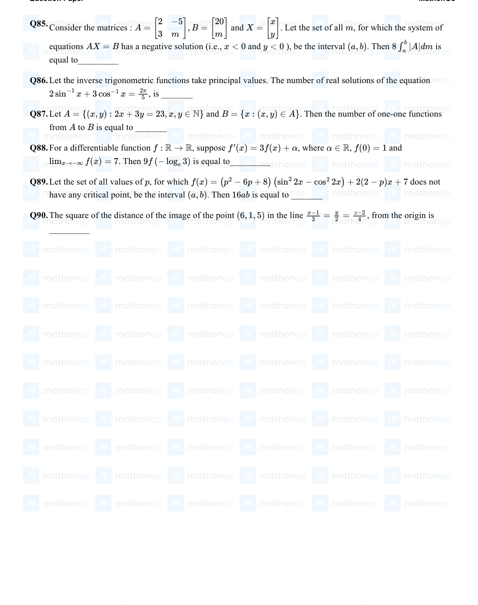

Consider the system of linear equations -𝑥+ 𝑦+ 2𝑧= 0 3𝑥- 𝑎𝑦+ 5𝑧= 1 2𝑥- 2𝑦- 𝑎𝑧= 7 Let 𝑆1 be the set of all 𝑎∈𝑅 for which the system is inconsistent and 𝑆2 be the set of all 𝑎∈𝑅 for which the system has infinitely many solutions. If nS1 and nS2 denote the number of elements in S1 and S2 respectively, then
(A)nS1 = 2, nS2 = 0
(B)nS1 = 2, nS2 = 2
(C)nS1 = 0, nS2 = 2
(D)nS1 = 1, nS2 = 0
Let 𝐽𝑛, 𝑚= ∫0 1𝑑𝑥, ∀𝑛> 𝑚 and 𝑛, 𝑚∈𝑁. Consider a matrix 𝐴= 𝑎𝑖𝑗3 where 𝑥𝑚- × 3 a𝑖𝑗= J6 + 𝑖, 3 - J𝑖+ 3, 3 , 𝑖≤𝑗 𝑗. Then adj A-1 is : 0 , 𝑖>
(A)(15 ) 2 × 234
(B)(15 ) 2 × 242
(C)(105 ) 2 × 236
(D)(105 ) 2 × 238
Let A = [ i −i ], i = √−1 . Then, the system of linear equations A8[ x ] = [ 8 ] has : −i i y 64
(A)A unique solution
(B)Infinitely many solutions
(C)No solution
(D)Exactly two solutions tan−1( ),
⎡ ⎤ 2 7 Let P = 90 140 112 and A = −1 −ω 1 where ω = −1+i√3 , and I3 be the identity matrix ⎣ ⎦ ⎣ ⎦ 2 120 60 14 0 −ω −ω + 1 of order 3 . If the determinant of the matrix (P −1AP −I3)2 is αω2 , then the value of α is equal to _________.
The total number of 3 × 3 matrices A having enteries from the set (0, 1, 2, 3) such that the sum of all the diagonal entries of AAT is 9 , is equal to
Let [ a1 ] [ b1 ] A = and B = be two 2 × 1 matrices with real entries such that A = XB, where a2 b2 [ 1 −1 ], X = √3 1 1 k and k ∈R. If a2 1 + a2 2 = 3 2 (b2 1 + b2 2) and (k2 + 1)b2 2 ≠−2 b1b2 , then the value of k is __________.
1 2 0 2 −1 5 Let A + 2B = ⎣ 6 −3 3 ⎦ and 2A −B = ⎣ 2 −1 6 ⎦ . If Tr
(A)denotes the sum of all diagonal elements −5 3 1 0 1 2 of the matrix A, then Tr
(B)−Tr
(C)has value equal to
(D)1
Define a relation R over a class of n × n real matrices A and B as " ARB iff there exists a non-singular matrix P such that PAP −1 = B ". Then which of the following is true ?
(A)R is symmetric, transitive but not reflexive
(B)R is reflexive, symmetric but not transitive
(C)R is an equivalence relation
(D)R is reflexive, transitive but not symmetric
Let the system of linear equations 4x + λy + 2z = 0 2x −y + z = 0 μx + 2y + 3z = 0, λ, μ ∈R has a non-trivial solution. Then which of the following is true?
(A)μ = 6, λ ∈R
(B)λ = 2, μ ∈R
(C)λ = 3, μ ∈R
(D)μ = −6, λ ∈R
Let I be an identity matrix of order 2 × 2 and P = . Then the value of n ∈N for which 5 −3 n P = 5I −8P is equal to ___ .
Let A = a ∈R be written as P + Q where P is a symmetric matrix and Q is skew symmetric matrix. a 0 If , then the modulus of the sum of all possible values of determinant of is equal to: det (Q) = 9 P
⎨ Let A = [aij] be a 3 × 3 matrix, where aij = ⎩ −x , if |i −j| = 1 2x + 1 , otherwise Let a function f : R →R be defined as f(x) =det
(A). Then the sum of maximum and minimum values of f on R is equal to:
(B)−20
(C)88 27 27
(D)20
⎡ 1 −1 0 ⎤ Let A = 0 1 −1 and B = 7A20 −20A7 + 2I , ⎣ 0 0 1 ⎦ where I is an identity matrix of order 3 × 3. If B = [bij] , then b13 is equal to
The value of k ∈R, for which the following system of linear equations 3x −y + 4z = 3 x + 2y −3z = −2 6x + 5y + kz = −3 has infinitely many solutions, is:
⎧ (−1)j−i if i < j Let A = {aij} be a 3 × 3 matrix, where aij = ⎨ 2 if i = j then det(3 Adj (2A−1)) is equal to ⎩ (−1)i+j if i > j ________.
Let A = [aij] be a real matrix of order 3 × 3, such that ai1 + ai2 + ai3 = 1, for i = 1, 2, 3 . Then, the sum of all the entries of the matrix A3 is equal to:
⎡ 0 1 0 ⎤ Let Then the number of matrices with entries from the set and A = ⎣ 1 0 0 ⎦ . 3 × 3 B {1, 2, 3, 4, 5} 0 0 1 satisfying AB = BA is ________.
The system of linear equations 3𝑥- 2𝑦- 𝑘𝑧= 10 2𝑥- 4𝑦- 2𝑧= 6 𝑥+ 2𝑦- 𝑧= 5 𝑚 is inconsistent if :
(A)𝑘= 3, 𝑚≠ 4
(B)𝑘= 3, 𝑚= 4 5 5
(C)𝑘≠3, 𝑚∈𝑅
(D)𝑘≠3, 𝑚≠4 5
3 -1 -2 Let 𝑃= 2 0 𝛼 , where 𝛼∈𝑅. Suppose 𝑄= 𝑞𝑖𝑗 is a matrix satisfying 𝑃𝑄= 𝑘𝐼3 for 3 -5 0 𝑘2 some non-zero 𝑘∈𝑅. If 𝑞23 = - 𝑘 and 𝑄= , then 𝛼2 + 𝑘2 is equal to_________. 8 2
Let 𝑀 be any 3 × 3 matrix with entries from the set 0, 1, 2. The maximum number of such matrices, for which the sum of diagonal elements of 𝑀𝑇𝑀 is seven, is______.
For the system of linear equations: x −2y = 1, x −y + kz = −2, ky + 4z = 6, k ∈R Consider the following statements:
(A)The system has unique solution if k ≠2, k ≠−2.
(B)The system has unique solution if k = −2.
(C)The system has unique solution if k = 2.
(D)The system has no-solution if k = 2. (E) The system has infinite number of solutions if k ≠−2. Which of the following statements are correct?
Let A and B be 3 × 3 real matrices such that A is a symmetric matrix and B is a skew-symmetric matrix. Then (A2 B2 −B2 A2)X the system of linear equations = O, where X is a 3 × 1 column matrix of unknown variables and O is a 3 × 1 null matrix, has
(A)exactly two solutions
(B)infinitely many solutions
(C)a unique solution
(D)no solution
If for the matrix, A = [ 1 −α ], AAT = I2 , then the value of α4 + β4 is : α β
Let A be a 3 × 3 matrix with det
(A)= 4 . Let Ri denote the ith row of A . If a matrix B is obtained by performing the operation on , then is equal to : R2 →2R2 + 5R3 2 A det
(C)64
(D)16
The following system of linear equations 2x + 3y + 2z = 9 3x + 2y + 2z = 9 x −y + 4z = 8
(A)has infinitely many solutions
(B)has a unique solution
(C)has a solution (α, β, γ) satisfying
(D)does not have any solution α + β2 + γ 3 = 12
1 2 [ 1 0 ], If A = ⎣ √5 √5 ⎦ , B = i = √−1 , and Q = ATBA , then the inverse of the matrix AQ2021AT is −2 1 i 1 √5 √5 equal to:
(A)[ 1 −2021 ]
(B)[ 1 0 ] ⎡ 0 1 ⎤ −2021i 1
(C)1 −2021
(D)[ 1 0 ] ⎣ √5 ⎦ 1 2021 i 1 2021 √5
Two fair dice are thrown. The numbers on them are taken as λ and μ, and a system of linear equations x + y + z = 5 x + 2y + 3z = μ x + 3y + λz = 1 is constructed. If p is the probability that the system has a unique solution and q is the probability that the system has no solution, then:
(A)p = 1 and q = 5
(B)p = 5 and q = 1 1 6 36 1 6 5 36 5
(C)p = 6 and q = 36
(D)p = 6 and q = 36
Let A be a 3 × 3 real matrix. If det (2 Adj (2 Adj (Adj (2A)))) = 241, then the value of det (A2) equals ______.
Let A be a symmetric matrix of order 2 with integer entries. If the sum of the diagonal elements of A2 is 1, then the possible number of such matrices is:
⎡ 1 0 0 ⎤ ⎡ 1 0 0 ⎤ If the matrix A = 0 2 0 satisfies the equation A20 + αA19 + βA = 0 4 0 for some real numbers ⎣ 3 0 −1 ⎦ ⎣ 0 0 1 ⎦ α and β , then β −α is equal to ______.
If the matrix A = [ 0 2 ] satisfies A(A3 + 3I) = 2I, then the value of K is K −1
(A)1
(B)1 2 −1
(C)−1
(D)2 x)2 x)2
If the system of linear equations 2x + y −z = 3 x −y −z = α 3x + 3y + βz = 3 has infinitely many solutions, then |α + −αβ| is equal to __________. β d2y dy
Let [λ] be the greatest integer less than or equal to λ . The set of all values of λ for which the system of linear equations x + y + z = 4, 3x + 2y + 5z = 3, 9x + 4y + (28 + [λ])z = [λ] has a solution is:
(A)R
(B)(−∞, −9) ∪[−8, ∞)
(C)(−∞, −9) ∪(−9, ∞)
(D)[−9, −8)
Let A = [ ]. If A−1 = αI + βA, α, β ∈R, I is a 2 × 2 identity matrix, then 4(α −β) is equal to : −1 4 8
For real numbers α and β, consider the following system of linear equations: x + y −z = 2, x + 2y + αz = 1 and 2x −y + z = β. If the system has infinite solutions, then α + β is equal to ______. sin2
Let A and B be two 3 × 3 real matrices such that (A2 −B2) is invertible matrix. If A5 = B5 and A3 B2 = A2 B3, then the value of the determinant of the matrix A3 + B3 is equal to :
⎡ 1 1 1 ⎤ If = 0 1 1 and = + A2 + A3 + … + A20, then the sum of all the elements of the matrix is A ⎣ ⎦ M A M 0 0 1 equal to _______.
If the following system of linear equations 2x + y + z = 5 x −y + z = 3 x + y + a z = b has no solution, then :
(A)a = −1 , b ≠7
(B)a ≠1 , b = 7 ≠−1 3 7 3 1 3 ≠7 3
(C)a 3 , b = 3
(D)a = 3 , b 3
The number of elements in the set {𝐴= 𝑎 𝑑: 𝑏 𝑎, 𝑏, 𝑑∈{ - 1, 0, 1} and (𝐼- 𝐴) 3 = 𝐼- 𝐴3}, where 𝐼 0 is 2 × 2 identity matrix, is .
Let the system of linear equations x + y + az = 2 3x + y + z = 4 x + 2z = 1 have a unique solution ( x∗, y∗, z∗) . If ( x∗), (y∗, and ( x∗, −y∗) are collinear points, then the sum of (a, α) absolute values of all possible values of α is:
Let 0 -2 10 𝐴2𝑘 10 𝐴2𝑘- 1 𝑀𝑁2 𝐴= 2 0 . If 𝑀 and 𝑁 are two matrices given by 𝑀= ∑𝑘= 1 and 𝑁= ∑𝑘= 1 then is
(A)a non-identity symmetric matrix
(B)a skew-symmetric matrix
(C)neither symmetric nor skew-symmetric matrix
(D)an identity matrix
1 1 1 -1 0 1 Let 𝐴 be a 3 × 3 real matrix such that 𝐴 1 = 1 ; 𝐴 0 = 0 and 𝐴 0 = 1 . If 𝑋= 𝑥1 𝑥2 𝑥3𝑇 0 0 1 1 1 2 4 and 𝐼 is an identity matrix of order 3, then the system 𝐴- 2𝐼𝑋= 1 has 1
(A)no solution
(B)infinitely many solutions
(C)unique solution
(D)exactly two solutions
Let 𝐴 be a 3 × 3 matrix having entries from the set -1, 0, 1. The number of all such matrices 𝐴 having sum of all the entries equal to 5, is _____
Let be a invertible matrix. If , then |A|2 is equal to A 3 × 3 |adj(24A)| =adj (3 adj (2A))|
The ordered pair (a, b) , for which the system of linear equations 3x −2y + z = b 5x −8y + 9z = 3 2x + y + az = −1 has no solution, is
(A)(3, 1 )
(B)(−3, 1 ) 3 3
(C)(−3, −1 3 )
(D)(3, −1 3 )
Let the system of linear equations x + 2y + z = 2 , αx + 3y −z = α, −αx + y + 2z = −α be inconsistent. Then α is equal to
(A)5
(B)−5 2 2
(C)7
(D)−7 2 2
⎡ 14 28 −14 ⎤ The positive value of the determinant of the matrix A , whose Adj(Adj(A)) = −14 14 28 , is ______. ⎣ ⎦ 28 −14 14
Let A and B be two 3 × 3 matrices such that AB = I and |A| = 1 then |adj(Badj(2A))| is equal to 8
Let A be a matrix of order 2 × 2 , whose entries are from the set {0, 1, 2, 3, 4, 5} . If the sum of all the entries of A is a prime number p, 2 < p < 8 , then the number of such matrices A is
Let A be a matrix of order 3 × 3 and det
(A)= 2 . Then det(det
(B)adj (5 adj (A3)) is equal to _____.
(C)106
(D)106 256 × 1024 ×
If the system of linear equations 2x + 3y −z = −2 x + y + z = 4 ∈R x −y + |λ|z = 4λ −4 where λ , has no solution, then
(A)λ = 7
(B)λ = −7 λ2
(C)λ = 8
(D)= 1
If the system of linear equations 2x −3y = γ + 5 αx + 5y = β + 1 , where α, β, γ ∈R has infinitely many solutions, then the value of |9α + 3β + 5γ| is equal to
The probability that a randomly chosen 2 × 2 matrix with all the entries from the set of first 10 primes, is singular, is equal to
(A)133
(B)19 104 103
(C)18
(D)271 103 104
Let A = [aij] be a square matrix of order 3 such that aij = 2j−i , for all i, j = 1, 2, 3 . Then, the matrix A2 + A3 + … + A10 is equal to
(A)( 310−1 )A
(B)( 310+1 )A 2 2
(C)( 310+3 )A
(D)( 310−3 )A 2 2
If the system of linear equations 2x + y −z = 7 x −3y + 2z = 1 x + 4y + δz = k , where δ, k ∈R has infinitely many solutions, then δ + k is equal to
( 2 −1 ) −5C1(adj 5C2(adj A)2 . . . 5C5(adj A)5 Let A = 0 2 . If B = I A) + − − , then the sum of all elements of the matrix B is:
Let P be a square matrix such that P 2 = I −P . For α, β, γ, δ ∈N , if P α + P β = γl −29P and P α −P β = δl −13P , then α + β + γ −δ is equal to
Let S be the set of all values of θ ∈[−π, π] for which the system of linear equations x + y + √3z = 0 −x + (tan θ)y + √7z = 0 x + y + (tan θ)z = 0 has non-trivial solution.Then 120 π ∑0∈S θ is equal to
If 𝐴 is a 3 × 3 matrix and 𝐴= 2, then 3 adj is equal to
(A)312 · 611
(B)312 · 610
(C)310 · 611
(D)311 · 610
For the system of linear equations 2𝑥- 𝑦+ 3𝑧= 5 3𝑥+ 2𝑦- 𝑧= 7 4𝑥+ 5𝑦+ 𝛼𝑧= 𝛽, which of the following is NOT correct?
(A)The system has infinitely many solutions for
(B)The system has infinitely many solutions for 𝛼= – 5 and 𝛽= 9 𝛼= - 6 and 𝛽= 9
(C)The system in inconsistent for 𝛼= – 5 and
(D)The system has a unique solution for 𝛼≠– 5 𝛽= 8 and 𝛽= 8
Let 𝐴 be a 2 × 2 matrix with real entries such that 𝐴' = 𝛼𝐴+ 1, where 𝛼∈ℝ- -1, 1., If det 𝐴2 - 𝐴= 4, the sum of all possible values of 𝛼 is equal to
If the system of linear equations 7x + 11y + αz = 13 5x + 4y + 7z = β 175x + 194y + 57z = 361 has infinitely many solutions, then α + β + 2 is equal to
Let A = [ 1 51 1 ] . If B = [ 1 2 ] A[ −1 −2 ] , then the sum of all the elements of the matrix ∑50 Bn is 0 1 −1 −1 1 1 n=1 equal to
(A)75
(B)125
(C)50
(D)100 1 2k 2k −1
The number of symmetric matrices of order 3, with all the entries from the set {0, 1, 2, 3, 4, 5, 6, 7, 8, 9} is
⎡ 1 3 α ⎤ ⎡ α ⎤ Let B = 1 2 3 , α > 2 be the adjoint of a matrix A and |A| = 2. Then [ α −2α α ]B −2α is equal to ⎣ α α 4 ⎦ ⎣ α ⎦
For the system of linear equations 2x + 4y + 2az = b x + 2y + 3z = 4 2x + 5y + 2z = 8 which of the following is NOT correct?
(A)It has unique solution if a = b = 6
(B)It has infinitely many solutions if a = 3, b = 6
(C)It has infinitely many solutions if a = 3, b = 8
(D)It has unique solution if a = b = 8
Let the determinant of a square matrix of order be , where m and satisfy and A m m −n n 4m + n = 22 17m + 4n = 93 . If det(n adj(adj(mA))) = 3a5b6c , then a + b + c is equal to
Let the system of linear equations –x + 2y −9z = 7 −x + 3y + 7z = 9 −2x + y + 5z = 8 −3x + + 13z = y λ has a unique solution x = α, y = β, z = γ . Then the distance of the point (α, β, γ) from the plane is 2x −2y + z = λ
If 𝐴 and 𝐵 are two non-zero 𝑛× 𝑛 matrices such that 𝐴2 + 𝐵= 𝐴2𝐵, then
(A)𝐴𝐵= 𝐼
(B)𝐴2𝐵= 𝐼
(C)𝐴2 = 𝐼 or 𝐵= 𝐼
(D)𝐴2𝐵= 𝐵𝐴2
Let 𝛼 be a root of the equation 𝑎- 𝑐𝑥2 + 𝑏- 𝑎𝑥+ 𝑐- 𝑏= 0 where 𝑎, 𝑏, 𝑐 are distinct real numbers such that 𝛼2 𝛼1 𝑎- 𝑐2 𝑏- 𝑎2 𝑐- 𝑏2 the matrix 1 1 1 is singular. Then the value of 𝑏+ 𝑏+ is 𝑎 𝑏 𝑐 𝑏- 𝑎𝑐- 𝑎- 𝑐𝑐- 𝑎- 𝑐𝑏- 𝑎
The number of square matrices of order 5 with entries from the set {0, 1} , such that the sum of all the elements in each row is and the sum of all the elements in each column is also , is 1 1
Let A be a 3 × 3 matrix such that |adj(adj(adj. A))| = 124 . Then A−1adj A is equal to
Let S1 and S2 be respectively the sets of all a ∈R −{0} for which the system of linear equations ax + 2ay −3az = 1 (2a + 1) x + (2a + 3) y + (a + 1)z = 2 (3a + 5) x + (a + 5) y + (a + 2) z = 3 has unique solution and infinitely many solutions. Then
(A)n(S1) = 2 and S2 is an infinite set
(B)S1 is an infinite set an n(S2) = 2
(C)= and = R −{0}
(D)= R −{0} and = S1 ϕ S2 S1 S2 ϕ
Let A, B, C be 3 × 3 matrices such that A is symmetric and B and C are skew-symmetric. Consider the statements (S1) A13 B26 −B26 A13 is symmetric (S2) A26C 13 −C 13 A26 is symmetric Then,
(A)Only S2 is true
(B)Only S1 is true
(C)Both and are false
(D)Both and are true S1 S2 S1 S2
⎡ 1 3 ⎤ Let A = √10 √10 and B = [ 1 −i ] , where i = √−1 . If M = AT BA , then the inverse of the matrix ⎣ −3 1 ⎦ 0 1 √10 √10 AM2023 AT is
(A)[ 1 −2023i ]
(B)[ 1 0 ] 0 1 −2023i 1 [ 1 0 ] [ 1 2023i ]
(D)2023i 1 0 1
Let α and β be real numbers. Consider a 3 × 3 matrix A such that A2 = 3A + αI . If A4 = 21A + βI , then
(A)α = 1
(B)α = 4
(D)β = 8 β = −8
Let A be a symmetric matrix such that |A| = 2 and [ ]A = [ ] If the sum of the diagonal elements of 3 3 α β βs 2 A is s , then α2 is equal to _________.
Options not extracted — refer to source paper.
Let the system of linear equations 𝑥+ 𝑦+ 𝑘𝑧= 2 2𝑥+ 3𝑦- 𝑧= 1 3𝑥+ 4𝑦+ 2𝑧= 𝑘 have infinitely many solutions. Then the system 𝑘+ 1 𝑥+ 2𝑘- 1 𝑦= 7 2𝑘+ 1𝑥+ 𝑘+ 5𝑦= 10 has :
(A)infinitely many solutions
(B)unique solution satisfying 𝑥- 𝑦= 1
(C)no solution
(D)unique solution satisfying 𝑥+ 𝑦= 1
If P is a 3 × 3 real matrix such that P T = aP + (a −1)I , where a > 1 , then
(A)P is a singular matrix
(B)|Adj P| > 1 1
(C)Adj P = 2
(D)|Adj P| = 1
For α, β ∈R , suppose the system of linear equations x −y + z = 5 2x + 2y + αz = 8 3x −y + 4z = β has infinitely many solutions. Then α and β are the roots of
(A)x2 −10x + 16 = 0
(B)x2 + 18x + 56 = 0
(C)x2 −18x + 56 = 0
(D)x2 + 14x + 24 = 0
1 0 0 Let 𝐴= 0 4 -1 . Then the sum of the diagonal elements of the matrix 𝐴+ 𝐼11 is equal to: 0 12 -3
(A)6144
(B)4094
(D)4097 2050
For the system of linear equations 𝑥+ 𝑦+ 𝑧= 6 𝛼𝑥+ 𝛽𝑦+ 7𝑧= 3 𝑥+ 2𝑦+ 3𝑧= 14 which of the following is NOT true ?
(A)If 𝛼= 𝛽= 7, then the system has no solution
(B)If 𝛼= 𝛽 and 𝛼≠7 then the system has a unique solution.
(C)There is a unique point ( 𝛼, 𝛽) on the line
(D)For every point ( 𝛼, 𝛽) ≠( 7, 7 ) on the line 𝑥+ 2𝑦+ 18 = 0 for which the system has x - 2y + 7 = 0, the system has infinitely many infinitely many solutions solutions.
Let ⌊aˆiˆj⌋⋅aij A = ∈Z ∩[0, 4], 1 ≤i, j ≤2 . The number of matrices A such that the sum of all entries is a prime number p ∈(2, 13) is _____ .
Options not extracted — refer to source paper.
Let A be a n × n matrix such that |A| = 2 . If the determinant of the matrix Adj (2. Adj (2 A−1)) is 284 , then n is equal to _____ .
Options not extracted — refer to source paper.
Let 𝐴= 𝐼2 −2𝑀𝑀𝑇, where 𝑀 is real matrix of order 2 × 1 such that the relation 𝑀𝑇𝑀= 𝐼1 holds. If 𝜆 is a real number such that the relation 𝐴𝑋= 𝜆𝑋 holds for some non-zero real matrix 𝑋 of order 2 × 1, then the sum of squares of all possible values of 𝜆 is equal to:
Let A be a 3 × 3 matrix of non-negative real elements such that A 1 = 3 1 . Then the maximum value of ⎣ 1 ⎦ ⎣ 1 ⎦ det(A) is ______
Let A = [ 1 2 ] and B = I + adj
(A)+ (adj A)2 + … + (adj A)10 . Then, the sum of all the elements of the 0 1 matrix B is:
(B)-124
(C)22
(D)-88
Let [ 1 ] [ 3 ] A be a 2 × 2 symmetric matrix such that A = and the determinant of A be 1 . If A−1 = αA + βI , 1 7 where I is an identity matrix of order 2 × 2 , then α + β equals _______ R →R 2x
Let A and B be two square matrices of order 3 such that |A| = 3 and |B| = 2 . Then ATA(adj(2 A))−1(adj(4 B))(adj(AB))−1AAT is equal to :
⎡ β α 3 ⎤ ⎡ 3α −9 3α ⎤ Let αβ ≠0 and A = α α β . If B = −α 7 −2α is the matrix of cofactors of the elements ⎣ ⎦ ⎣ ⎦ −β α 2α −2α 5 −2β of , then is equal to : A det(AB)
If A is a square matrix of order 3 such that det
(A)= 3 and det (adj (−4 adj (−3 adj (3 adj ((2 A)−1))))) = 2m3n , then m + 2n is equal to :
(B)2
(C)3
(D)6
⎡ 2 a 0 ⎤ Let A = 1 3 1 . If A3 = 4A2 −A −21I , where I is the identity matrix of order 3 × 3 , then 2a + 3b is ⎣ ⎦ 0 5 b equal to
Let A be a non-singular matrix of order 3 . If det(3 adj(2 adj((det A)A))) = 3−13 ⋅2−10 and det(3 adj(2 A)) = 2m ⋅3n , then |3 m + 2n| is equal to
Let [ 1 3 ] B = and A be a 2 × 2 matrix such that AB−1 = A−1 . If BCB−1 = A and C 4 + αC 2 + βI = O , 1 5 then 2β −α is equal to
Consider the matrices : A = [ 2 −5 ], B = [ 20 ] and X = [ x ] . Let the set of all m , for which the system of 3 m m y ∫b equations AX = B has a negative solution (i.e., x < 0 and y < 0 ), be the interval (a, b) . Then 8 a |A|dm is equal to_________
⎡ 2 0 1 ⎤ ⎡ 1 ⎤ Let A = 1 1 0 , B = [ B1 B2 B3 ] , where B1 , B2, B3 are column matrices, and AB1 = 0 , ⎣ ⎦ ⎣ ⎦ 1 0 1 0 ⎡ 2 ⎤ ⎡ 3 ⎤ AB2 = 3 , AB3 = 2 ⎣ 0 ⎦ ⎣ 1 ⎦ If α = |B| and β is the sum of all the diagonal elements of B , then α3 + β3 is equal to
Let A be a 2 × 2 real matrix and I be the identity matrix of order 2 . If the roots of the equation |A - xI | = 0 be and then the sum of the diagonal elements of the matrix A2 is _____. -1 3,

Let A be a square matrix such that AAT = I . Then 1 A[( A + AT)2 + (A −AT)2] is equal to 2
(A)A2 + I
(B)A3 + I
(C)A2 + AT
(D)A3 + AT
𝑥 0 0 Let 𝑅= 0 𝑦0 be a non-zero 3 × 3 matrix, where 𝑥sin𝜃= 𝑦sin𝜃+ 2𝜋 = 𝑧sin𝜃+ 4𝜋 ≠0, 𝜃∈( 0, 2𝜋) . 3 3 0 0 𝑧 For a square matrix 𝑀, let Trace𝑀 denote the sum of all the diagonal entries of 𝑀. Then, among the statements: I Trace ( 𝑅) = 0 ( II ) If Trace ( adj ( adj ( 𝑅) ) = 0, then 𝑅 has exactly one non-zero entry.
(A)Both and are true
(B)Only is true ( I ) ( II ) ( II )
(C)Neither ( I ) nor ( II ) is true
(D)Only ( I ) is true
Consider the system of linear equations 𝑥+ 𝑦+ 𝑧= 5, 𝑥+ 2𝑦+ 𝜆2𝑧= 9 and 𝑥+ 3𝑦+ 𝜆𝑧= 𝜇, where 𝜆, 𝜇∈𝑅. Then, which of the following statement is NOT correct ?
(A)System has infinite number of solution if 𝜆= 1
(B)System is inconsistent if 𝜆= 1 and 𝜇≠13 and 𝜇= 13
(C)System has unique solution if 𝜆≠1 and 𝜇≠13
(D)System is consistent if 𝜆≠1 and 𝜇= 13
If the system of linear equations 𝑥- 2𝑦+ 𝑧= - 4 2𝑥+ 𝛼𝑦+ 3𝑧= 5 3𝑥- 𝑦+ 𝛽𝑧= 3 has infinitely many solutions, then 12𝛼+ 13𝛽 is equal to
1 1 −1 −1 0 0 Let A be a real matrix such that . Then, the system 3 × 3 𝐴 0 = 2 0 , 𝐴 0 = 4 0 , 𝐴 1 = 2 1 1 1 1 1 0 0 𝑥 1 𝐴−3𝐼 𝑦 = 2 has 𝑧 3
(A)unique solution
(B)exactly two solutions
(C)no solution
(D)infinitely many solutions
Let 𝐴 be a 3 × 3 matrix and det𝐴= 2. If 𝑛= det𝑎𝑑𝑗𝑎𝑑𝑗. ⏟ ... 𝑎𝑑𝑗𝐴 , then the remainder when 𝑛 is divided by 9 is equal to __________. 2024 −times